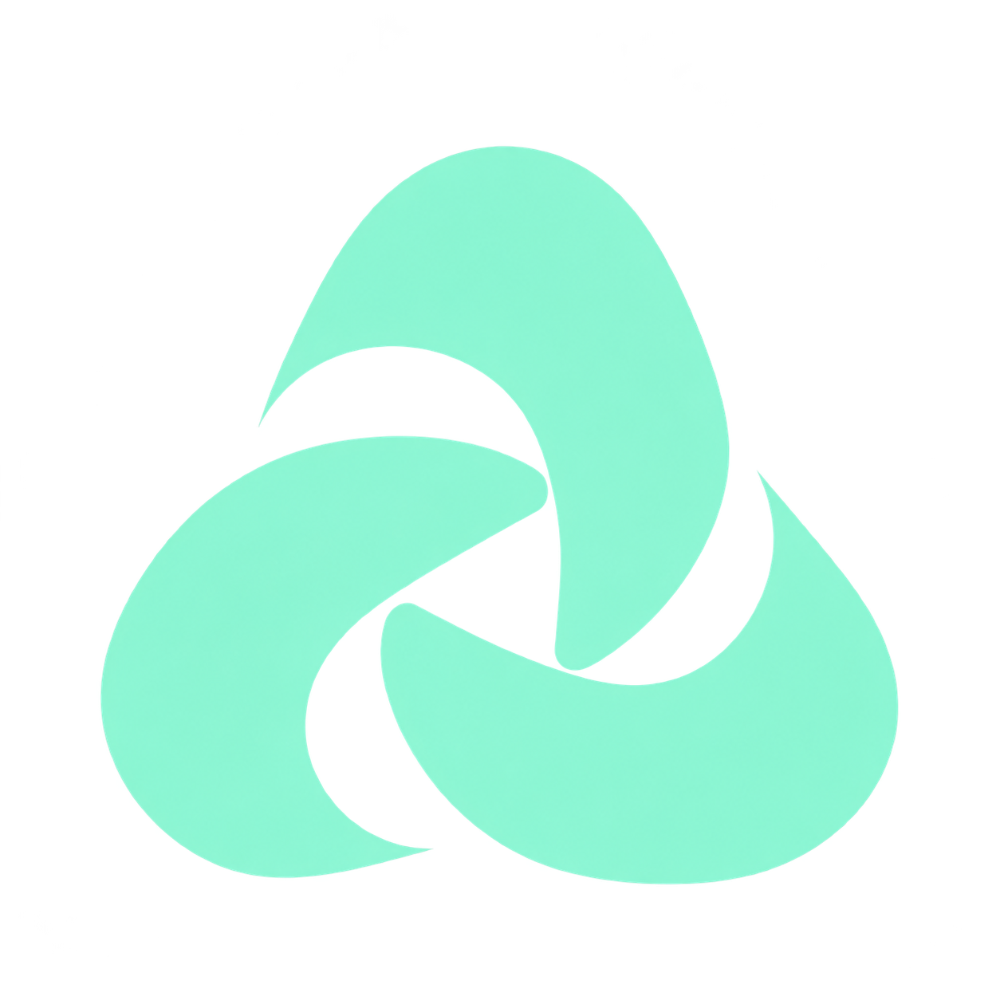
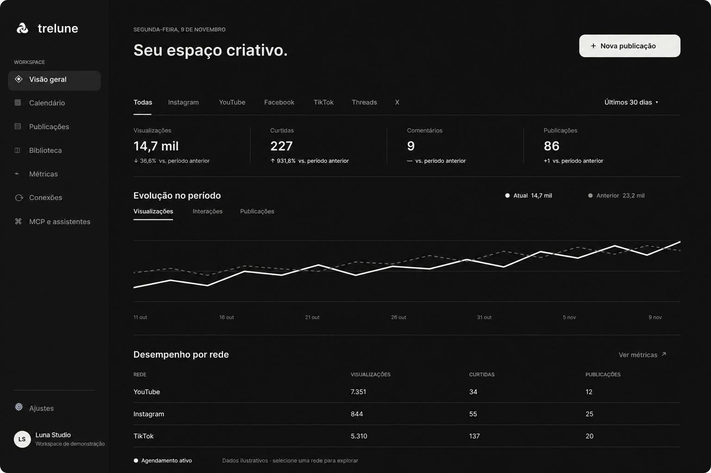

Planeje com clareza
Veja o que está por vir e organize suas ideias.

trelunePlaneje, organize e acompanhe suas publicações. Tudo em um só app nativo para macOS.

Acompanhe o calendário, as publicações e o desempenho do seu conteúdo em uma visão clara.
Veja o que está por vir e organize suas ideias.
Entenda o desempenho das suas publicações.
Revise cada destino antes de publicar.
Você escolhe o que vai ao ar. O Trelune mantém cada etapa organizada.
Reúna ideias, textos e mídia na biblioteca.
Escolha os canais e planeje as datas no calendário.
Revise cada destino e confirme antes de publicar.
O app publica automaticamente enquanto estiver aberto. Nenhuma publicação acontece sem a sua confirmação.
Um projeto independente e open source para o seu fluxo criativo.
Baixar para MacmacOS 14 Sonoma ou superior